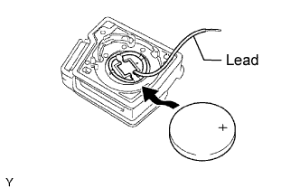

TRANSMITTER BATTERY > INSPECTION |
| 1. INSPECT BATTERY CAPACITY |
|  |
Connect the lead to the negative (-) terminal of the transmitter and install the battery.
 |
Connect the positive (+) tester probe to the positive (+) side of the battery (lithium battery) and the negative (-) tester probe to the lead.
Press one of the transmission switches on the transmitter for approximately 1 second.
Press the same or another transmission switch again and check the voltage.
Disconnect the lead.